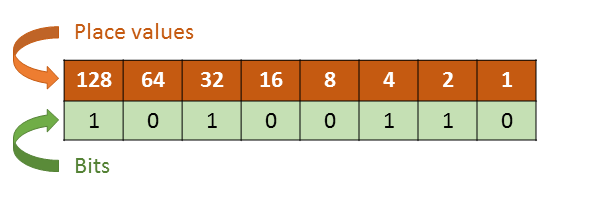

En informatica, a cada numero binario se le conoce como bit, este puede valer tanto 0 como 1.
Los Ordenadores funcionan con bits pero entienden bytes, los cuales están conformados de 8 bits(00000000). Este es el lenguaje binario de la informatica, cada byte representa un numero:
Los valores se leen de derecha a izquierda, el primer bite vale 1 y crece en un exponencial de 2, lo que significa que si el primer valor es 1, el segundo es 2, el tercero 4, el cuarto es 8 y asi sucesivamente.
los valores de cada numero representado con un 1 (Encendido) se suman, lo que da como resultado el valor del byte.

Por ejemplo el valor del numero 10100110 da como resultado 166, ya que es la suma de:
(2 + 4 + 32 + 128).